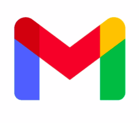

Яна СергеевнаПривет! Меня зовут Яна - позитивный QA Engineer с нестандартным подходом к тестированию. Моя миссия - сделать цифровой мир стабильнее, безопаснее и удобнее для всех!♥ |
КОНТАКТЫВсегда открыта к новым профессиональным знакомствам и интересным проектам! yanchionokk@gmail.com |

Мои профессиональные навыки |
||
|
|
|